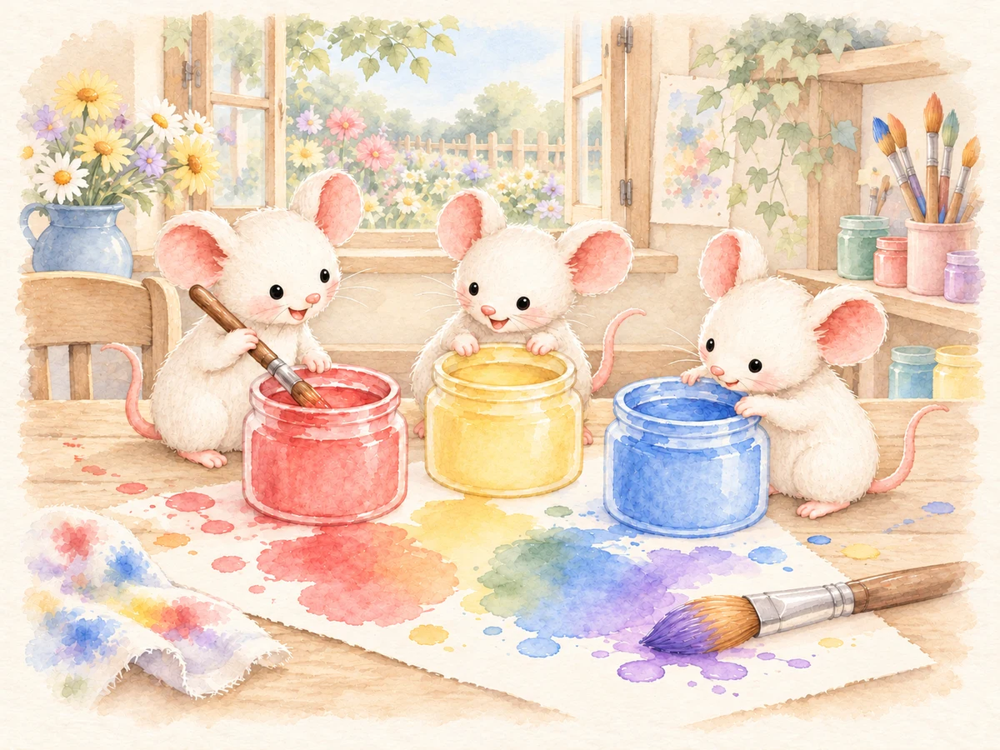

Book Companion Games
Mouse Paint
Choose two paint colors with Mouse, predict the mixture and reveal matching paw prints on the easel.
Free
Ways to use it
- Explore red, yellow and blue mixtures.
- Make a prediction, then describe the color revealed.
How to play
- Choose two different paint jars.
- Say your prediction aloud, then tap the color panel to reveal the mixture.
- Use Next to move to the next turn.
Practical details
Teacher settings allow 1–999 turns. The three mixtures repeat. There is no timer or penalty; the teacher controls the pace.
Explore together
Invite children to explain what they notice and talk through their choices.